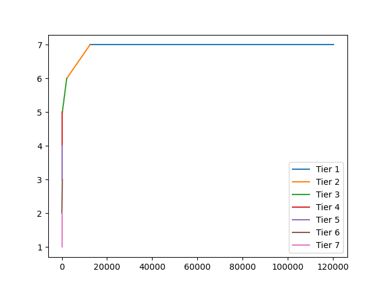

This report is written as an analysis of OmniAnalytic's Report of a similar name with suggestions and recommended improvements.
The Methodology of their data collection was very accurate scraping data directly from the blockchain removing the need for a data aggregator to do it for them which would have introduced a potential source of inaccuracy. The only suggestion I can provide here is to increase the scope of data being collected to also include validator earnings to get a better understanding of how much validators are earning or losing. This can provide insight into how pseudo-random work distribution affects earnings as well as how much the average and median validators are earning. A good place to get started would be to check out this leaderboard) of validators and see how earnings are distributed.
Client Variation
One metric that can be used to measure complex blockchains that could be added to get a better picture of Ethereum 2.0's health is Client Distribution. Client's are open to bugs, so the more clients being run and the more equal the split between the clients the network becomes more resistant to the bugs of one specific client. The risks of this were seen with the Medalla Testnet running into an issue relating to time on the Prysm Client. (Further reading here) A good place to start looking for client distribution can be seen beaconcha.in as seen here
The initial tiering system provided insight into how each node is performing on the network from the various different possibilities. I recommend switching to a system that instead looks to measure the positive or negative impact validators are having on the network. The tiering system featured in the report is shown below
I propose the following system to better demonstrate how each node is contributing to the network.
After implementing these rules to sort out the data, I wrote some python to create a preview of what this distribution looks like below
sorttiers()
plt.plot([len(tier7) + len(tier6) + len(tier5) + len(tier4) + len(tier3) + len(tier2), len(tier7) + len(tier6) + len(tier5) + len(tier4) + len(tier3) + len(tier2) + len(tier1)], [7,7], label = "Tier 1")
plt.plot([len(tier7) + len(tier6) + len(tier5) + len(tier4) + len(tier3), len(tier7) + len(tier6) + len(tier5) + len(tier4) + len(tier3) + len(tier2)], [6,7], label = "Tier 2")
plt.plot([len(tier7) + len(tier6) + len(tier5) + len(tier4), len(tier7) + len(tier6) + len(tier5) + len(tier4) + len(tier3)], [5,6], label = "Tier 3")
plt.plot([len(tier7) + len(tier6) + len(tier5), len(tier7) + len(tier6) + len(tier5) + len(tier4)], [4,5], label = "Tier 4")
plt.plot([len(tier7) + len(tier6), len(tier7) + len(tier6) + len(tier5)], [3,4], label = "Tier 5")
plt.plot([len(tier7), len(tier7) + len(tier6)], [2, 3], label = "Tier 6")
plt.plot([0, len(tier7)], [1, 2], label = "Tier 7")
plt.legend(loc = 'best')
plt.show()
The first graph shows the data distribution using the revised set of rules, with the one following it showing the data distribution using the rules outlined in the report by Omni Analytics.
The distribution didn't change significantly, but the lower tiers did increase. This is because most validators are able to achieve extraordinary uptime and task completion as they are incentivized to do so to earn the most.

The distribution of the Original Rules has more nodes categorized in Tier 5, while the revised set has more nodes inside of tier 3. This is most likely because the majority of non-perfect nodes are between the 75% and 90% success rate, so they fall in tier 5 based on the original rules, and tier 3 according to the revised tier rules.
The data is also re-organized into tables shown below. Skipped blocks and successful blocks are both averages for their tiers. It is also important to note that when importing the data from the csv into a pandas dataframe some data like epochs active was changed so the tables should be compared only to each other, and not the one in the report as the same source can not be confirmed between the 2, only similar data.
Modified Tiers
| Tier | Description | Count | Successful Blocks | Skipped Blocks | Percentage Slashed |
|---|---|---|---|---|---|
| 1 | Perfect Proposers with at least 2 assignments | 108145 | 8.541735632715335 | 0 | 0 |
| 2 | Validators with 90% success rate | 10301 | 5.701018922852984 | 0.3984473556525 | 0 |
| 3 | All others with a <= 75% success rate | 2070 | 6.671497584541063 | 1.258454106280193 | 0 |
| 4 | Perfectly Inexperienced Nodes | 100 | 1 | 0 | 0 |
| 5 | Completely Inexperienced Nodes | 144 | 0 | 0 | 0 |
| 6 | Nodes with >= 75% success rate | 570 | 3.805263157894737 | 2.615789473684210 | 0 |
| 7 | Slashed and Left | 50 | 0.86 | 0.18 | 100 |
Original Tiers
| Tier | Description | Count | Successful Blocks | Skipped Blocks | Percentage Slashed |
|---|---|---|---|---|---|
| 1 | Perfect, at least 2 assignments | 108145 | 8.541735632715335 | 0 | 0 |
| 2 | Validators with 90% success rate | 10301 | 5.70041743520046 | 0.3983108436074 | 0 |
| 3 | Perfect Inexperienced Nodes (1 success & 0 skipped) | 100 | 1 | 0 | 0 |
| 4 | Completely Inexperienced (0 and 0) | 144 | 0 | 0 | 0 |
| 5 | >= .5 Success rate | 2570 | 6.149416342412452 | 1.45486381322957 | 0 |
| 6 | < .5 Success rate | 70 | 2.560606060606060 | 5.3181818181818 | 0 |
| 7 | Slashed and Left | 50 | 0.86 | 0.18 | 100 |
Justification
Changing the percentage of successful jobs from 50% to 75%. I felt this was a good choice to show network health because at a 50% success rate a validator's net impact is 0, so to make these tiers better reflect validators contributing with low performance I decided to switch to 75% as a threshold. The reason a validator with a 50% success rate has no net contribution to the network is since the number of jobs they are skipping actively hurts the efficiency of the network close to the same amount as the one they are getting right. Missing blocks means transactions that could've been finalized are not, and if too many validators are skipping blocks then block creation times slow down for the network leading to fewer transactions being processed. This is why I switched the threshold to 75%, as each percent above 50 is a higher positive impact on the network, so 75% shows the point where a node is has begun to contribute positively towards the network in a significant way marking the midway between 100% and 50%. It is also important to note this method punishes both inefficient and dishonest behavior, rather than just dishonest behavior.
Moving Completely Inexperienced Nodes to tier 5. I suggest this change in tier because an inexperienced node has a net 0 impact on the network in that it isn't contributing anything, but it isn't doing anything wrong. So it makes sense to put it in between positive and negative nodes.
I suggest moving Perfect Inexperienced Nodes to Tier 4 because despite having no negative impact, their overall contribution to the network is little due to a little amount of work contributed. So their impact is just above no impact as they only provided 1 block worth of transactions.
Looking through the sorted Validator scores I felt that the tiered metrics still fell short of fully showcasing validators contribution to the network. I suggest using tier as a coefficient that is then multiplied by epochs active. This score would then reflect how impactful a validator was in helping or hurting the network. The exact coefficients are up for debate, but I do have some recommended guidelines.
Justification
The reason time active is important is because nodes are penalized for going offline, and exponentially increasing the more other nodes go inactive. This is because lots of offline increase the exposure to attacks, and the weight malicious blocks have if there aren't enough correct blocks to achieve consensus with current blocks.
This is also important to weigh the overall impact a node has, as a node that does great work infrequently is worse than a node that does good work frequently because the good node leads to more tx's being processed.
Tier 1 has Highest Coefficient
Tier 5 has a Coefficient of 0, because nodes aren't contributing positively to the network's security
Tiers 6 and 7 have a negative coefficient because their contributions to the network hurt it with inaccurate jobs and bad behavior.
Main points made in this report are summarized below in order of appearance.
Measure Validator earnings to get a better idea of how pseudo-random job assignment is affecting earnings, and get a better idea of the returns nodes are earning.
Monitor client variations to ensure the network is vunerable to a bug inside of one client taking a signficant % of the validators.
Re-adjusted tiering structure to prioritize acting honestly and efficiently for the network rather than just honestly. Inexperienced nodes were then lowerd to tier 5 (completely) and tier 4 (perfect). Tier 3 was then changed to nodes with atleast a 75% success rate, and tier 6 was below a 75% success rate.
Suggested scoring each validator using tier as a coefficient to epochs active. This way validators are ranked across their total contribution to the network rather than just the efficiency and accuracy of their work.